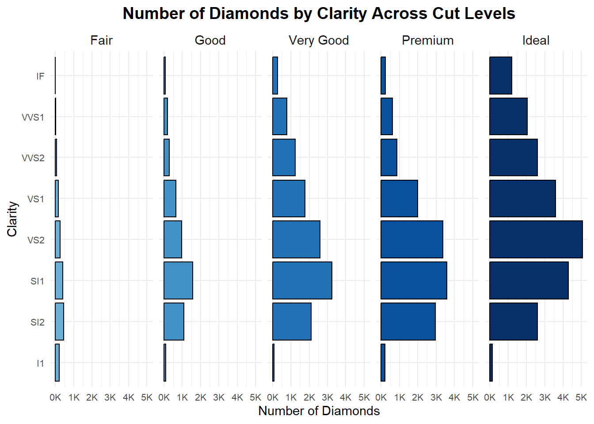

The following object is masked from 'package:dplyr':
combine
# color palettepalette_cut <-brewer.pal(n =5, name ="Dark2") # 5 colors for 'cut'# Histogramhist_plot <-ggplot(diamonds, aes(x = price)) +geom_histogram(aes(y =after_stat(density)), bins =30, fill ="gray80", color ="black") +stat_function(fun = dnorm, args =list(mean =mean(diamonds$price), sd =sd(diamonds$price)), color ="blue", size =1) +labs(title ="Histogram of Diamond Prices", x ="Price", y ="Density") +theme_minimal(base_size =5)
Warning: Using `size` aesthetic for lines was deprecated in ggplot2 3.4.0.
ℹ Please use `linewidth` instead.
# Bar Plotbar_plot <- diamonds %>%group_by(cut) %>%summarise(count =n()) %>%ggplot(aes(x = cut, y = count, fill = cut)) +geom_bar(stat ="identity") +labs(title ="Bar Plot: Count of Diamonds by Cut", x ="Cut", y ="Count") +scale_fill_manual(values = palette_cut) +theme_minimal(base_size =5)# Box Plotbox_plot <-ggplot(diamonds, aes(x = cut, y = price, fill = cut)) +geom_boxplot() +labs(title ="Box Plot: Price Distribution by Cut", x ="Cut", y ="Price") +scale_fill_manual(values = palette_cut) +theme_minimal(base_size =5)# Scatter Plotfacet_scatter <-ggplot(diamonds, aes(x = carat, y = price, color = color)) +geom_point(alpha =0.5, size =2) +facet_wrap(~ cut) +labs(title ="Faceted Scatter Plot: Carat vs Price by Color", x ="Carat", y ="Price") +scale_color_brewer(palette ="Set1") +theme_minimal(base_size =5)# Heatmapheatmap_data <- diamonds %>%group_by(cut, color) %>%summarise(avg_price =mean(price), .groups ="drop") # Avoid warningheatmap <-ggplot(heatmap_data, aes(x = cut, y = color, fill = avg_price)) +geom_tile(color ="white") +scale_fill_gradient(low ="lightblue", high ="darkblue") +labs(title ="Heatmap: Average Price by Cut and Color", x ="Cut", y ="Color") +theme_minimal(base_size =5)# Pie Chartpie_data <- diamonds %>%group_by(cut) %>%summarise(count =n()) %>%mutate(percentage = count /sum(count))pie_chart <-ggplot(pie_data, aes(x ="", y = percentage, fill = cut)) +geom_bar(stat ="identity", width =1) +coord_polar(theta ="y") +labs(title ="Pie Chart of Diamond Cuts") +scale_fill_brewer(palette ="Dark2") +theme_void(base_size =5)# Arrange all plots in a 2x3 grid layoutgrid.arrange( hist_plot, bar_plot, box_plot, facet_scatter, heatmap, pie_chart,ncol =2)
Chart 3:
library(ggplot2)library(RColorBrewer)library(scales)# Define a sequential palette from RColorBrewer packageblues_palette <-brewer.pal(9, "Blues")custom_palette <- blues_palette[5:9] # select particular colors# Create the horizontal bar chart with facetsggplot(data = diamonds, aes(x = clarity, fill = cut)) +geom_bar(color ="black") +facet_wrap(~ cut, nrow =1) +scale_y_continuous(labels =label_number(scale =1/1000, suffix ="K")) +coord_flip() +scale_fill_manual(values = custom_palette) +theme_minimal(base_family ="sans") +labs(title ="Number of Diamonds by Clarity Across Cut Levels",x ="Clarity",y ="Number of Diamonds",fill ="Cut" ) +theme(plot.title =element_text(hjust =0.5, face ="bold", size =14),axis.text.y =element_text(size =8),axis.text.x =element_text(size =8),strip.text =element_text(size =11),legend.position ="none",text =element_text(family ="sans") )

Chart 4:
# Filter the dataset for the required cutsfiltered_diamonds <-subset(diamonds, cut %in%c("Very Good", "Ideal"))# Create the plot## The key issue was to make the left bars overlap over/on top of the rigt!ggplot(filtered_diamonds, aes(x = color)) +geom_bar(data =subset(filtered_diamonds, cut =="Ideal"), aes(y =after_stat(count), fill = cut), position =position_nudge(x =0.15), width =0.5, alpha =0.7) +# Right bars (Ideal)geom_bar(data =subset(filtered_diamonds, cut =="Very Good"), aes(y =after_stat(count), fill = cut), width =0.5) +# Left bars (Very Good) on topscale_y_continuous(labels = scales::unit_format(unit ="k", scale =1e-3)) +# Format y-axis labelslabs(title ="Number of Diamonds by Color across Selected Cut Quality Levels",x ="Color",y ="Number of Diamonds",fill ="Selected Cut Quality Levels" ) +scale_fill_manual(values =c("Very Good"="#66c2a5", "Ideal"="#fc8d62")) +# Custom colorstheme_minimal(base_family ="sans") +theme(plot.title =element_text(face ="bold", size =14, hjust =0.5), # Centered, bold, and larger titleaxis.text.y =element_text(size =10), # Adjust y-axis text size if neededlegend.position ="top"# Adjust legend position if needed )